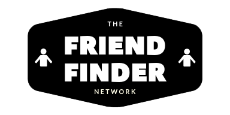

The older you get, the harder it is to find places you can meet people who enjoy the same things in life as you.
With the Friend Finder Network, we do all the hard work. You don't have to rely on your workplace, or randomly bumping into someone in order to meet people to socialize with.
With FFN, you let our system determine your best matches based on common personality traits and characteristics.
Try us out today!
All you need to do is fill out a short information
survey, and you'll be sharing
coffee or mimosas with your new friend in no time.